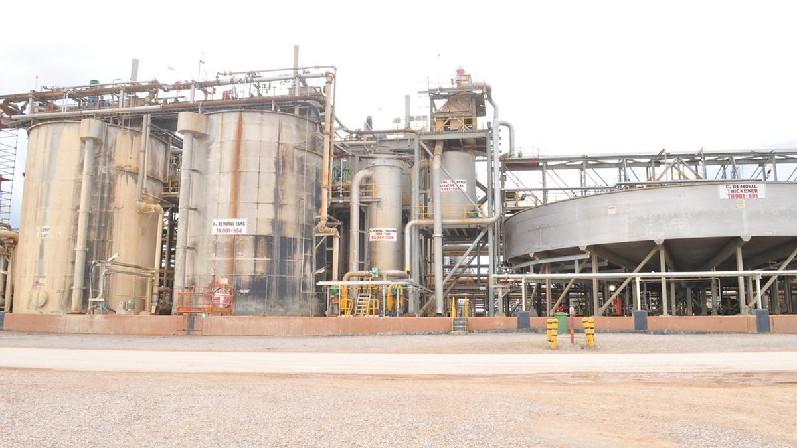
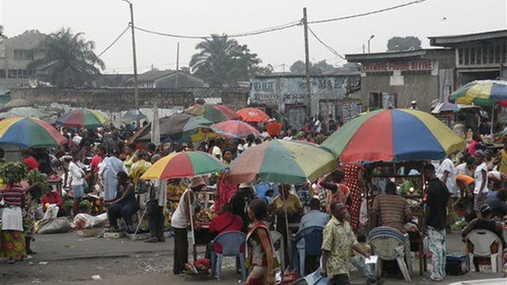

Makutano Mining à Kinshasa : ce qu'une PME peut aller y chercher
Du dimanche 22 au mercredi 25 novembre 2026, Kinshasa accueille Makutano Mining, un forum consacré aux minerais critiques comme le cobalt, le cuivre, le lithium et le coltan. Il est organisé par le réseau d'affaires Makutano et prévoit un espace de rendez-vous entre entreprises, investisseurs et institutions.
Lire l'article · 2 minLes dernières annonces
3 articles
22-25 NOV.Makutano Mining à Kinshasa : ce qu'une PME peut aller y chercher
20 novembre 2026 · 2 minRégine Tika : le café du Mayombe qui a remporté le Prix Pierre Castel RDC
19 novembre 2026 · 2 min
5EWave obtient sa licence d'argent mobile en RDC : ce que ça change pour les commerces
19 novembre 2026 · 2 minLes annonces passées6 articles
jeudi 19 novembre 2026
mercredi 18 novembre 2026
Aucune annonce ne correspond.
Rends ton entreprise visible
Voir les prixTu veux que ton entreprise soit vue ? Remplis ce petit formulaire : il prépare ton message, tu l'envoies sur WhatsApp, et on te répond avec un devis.
- 01
Ta demande
Tu remplis le formulaire ci-dessous. Ça prend 2 minutes.
- 02
Ton devis
On te répond sur WhatsApp avec le prix exact, le délai et les numéros de paiement.
- 03
L'acompte
Tu verses 50 % par M-Pesa. On commence le travail.
- 04
La livraison
Tu reçois ton travail, tu demandes tes corrections (2 séries incluses), puis tu paies le reste.